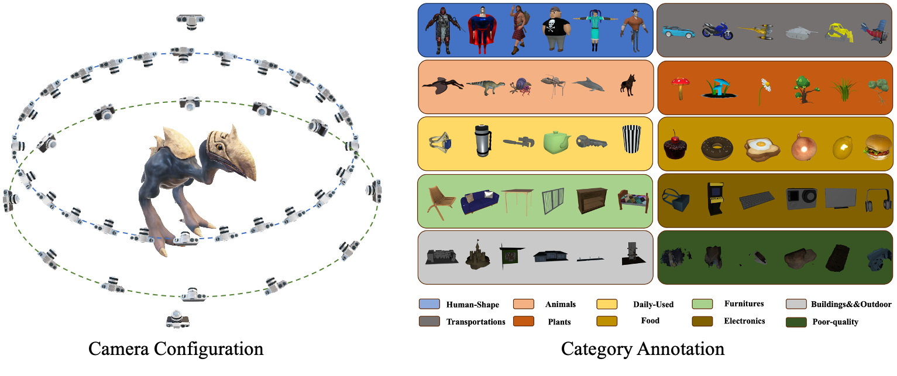

Application

High-Quality Rendering Dataset of Objaverse (HQR-Objaverse) is rendered using the XX renderer on Objaverse with A10 for about 2000 GPU hours, yielding 3000,0000 number of albedo, RGB, Depth, and Normal images. We render 38 views of a centered object. In addition, we mannuly split the subset of the dataset into 10 general including including Human-Shape, Animals, Daily-Used, Furnitures, Buildings&&Outdoor, Transportations, Plants, Food, Electronics and Poor-quality.

@article{qiu2023richdreamer,
title={RichDreamer: A Generalizable Normal-Depth Diffusion Model for Detail Richness in Text-to-3D},
author={Lingteng Qiu and Guanying Chen and Xiaodong Gu and Qi zuo and Mutian Xu and Yushuang Wu and Weihao Yuan and Zilong Dong and Liefeng Bo and Xiaoguang Han},
year={2023},
journal = {arXiv preprint arXiv:2311.16918}
}
@article{objaverse,
title={Objaverse: A Universe of Annotated 3D Objects},
author={Matt Deitke and Dustin Schwenk and Jordi Salvador and Luca Weihs and
Oscar Michel and Eli VanderBilt and Ludwig Schmidt and
Kiana Ehsani and Aniruddha Kembhavi and Ali Farhadi},
journal={arXiv preprint arXiv:2212.08051},
year={2022}
}